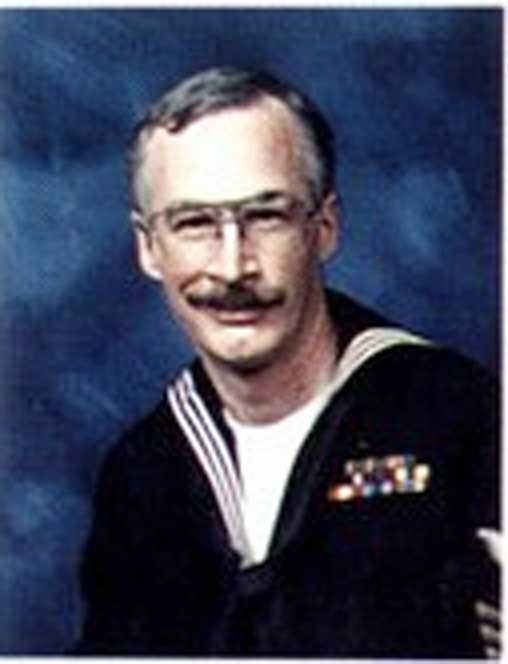
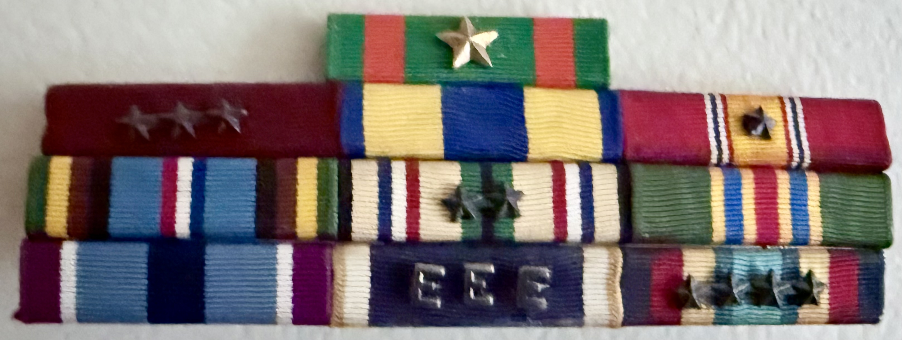
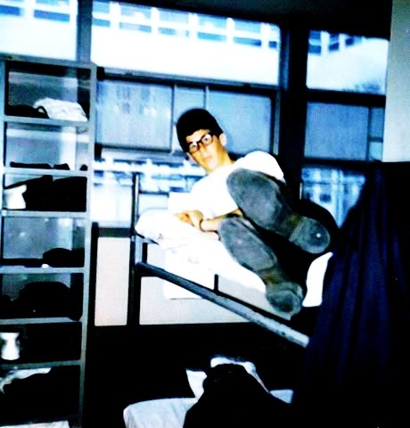

Military Photos

My Retirement Picture.

Retirement Rank.

Bootcamp - 3rd row, 3rd person from the left

FOUR Aircraft Carriers Gulf War - of the four, Lower Left = my Ship USS Ranger.

My Ribbons.

Aircraft carrier at sea.

HS-14 — Me.

Brian.

Boot Camp — Camp Barry, Great Lakes.

AN/ARC-51 UHF radio.

HS-14 “Chargers” SH-3H Sea King helicopters aboard USS Ranger during Desert Shield / Desert Storm.

VAQ-130 EA-6B VANS, Secret.

Military photo 13.

Military photo 14.

Military photo 15.

Military photo 16.

Military photo 17.

Military photo 18.

Military photo 19.

Military photo 20.

Military photo 21.

Military photo 22.

Military photo 23.